(from my email of December 2006)
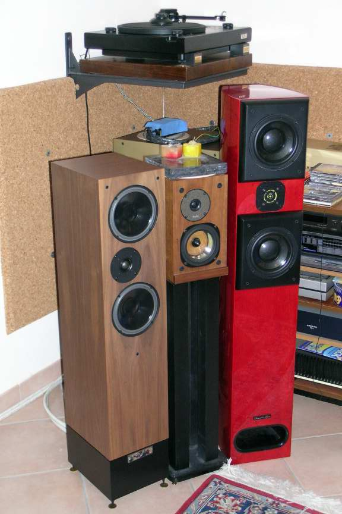
Dear audiophile friends,the last time I wrote you (one month ago) I announced that I will have two very good speakers at home, trying to remove from my living room my old and loved ProAC Response 1S bookshelf.
The two candidates are the Living Voice Avatar (3000 GBP) and the "enfant prodige" Acoustic Zen Adagio (4300 US$). Both are standing speakers with 2 ways and double woofer in D'Appolito configuration (see first picture). The main difference is that the Avatar have a bass reflex and higher sensitivity, while the Adagio are loaded in a transmission line (like the D'Appolito “Thor” project, but with the port on the front side) and have "only" 89 dB. Another difference is that the Adagio uses "special" drivers.
What I'm going to say in describing how they sound is something that is strongly biased from 3 subjective conditions:
my living room
my system (in particular my power amplifier, which is a C-J push-pull of EL34 in pseudotriode with only 22 W and only one output - thought for 8 Ohm)
my personal taste!
The Living Voice Avatar were really happy with the 22 W of my EL34. The bass was deeper and louder than that of my ProAC (of course), but also the high frequencies were more detailed and clear. On the other hand, the midrange of my Response 1S was more natural and realistic, in particular with male voices. But what I have found to be the most impressive performance of the Avatar is the soundstage: really incredible! I think that the asymmetric (toward inside) tweeter position and a very "clean" crossover must be the source of such a great scene.
The Acoustic Zen Adagio are really something expecial: the woofers are ceramic with "under-hung" coil (to reduce distorsion), while the tweeter is a custom circular ribbon (with a 10micron kapton membrane), which plays from 3 kHz up to... heaven! Both drivers use Neodymium magnets and 3th order filters. When you first listen them you are shot by their resolution, un-distorsion and... bass clearness. This transmission line bass is not only deep and loud (see diagram 1, made at 0.3m), but first of all it is "realistic", something which you can't find easily.
|
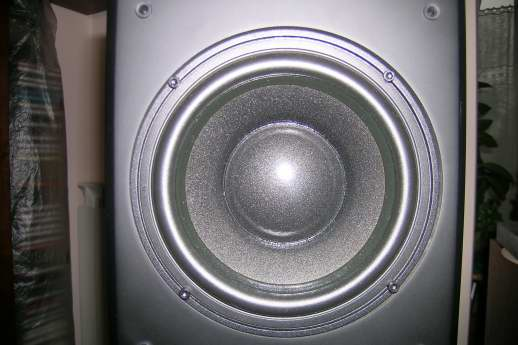 One of the two 6.5” ceramic woofers. |
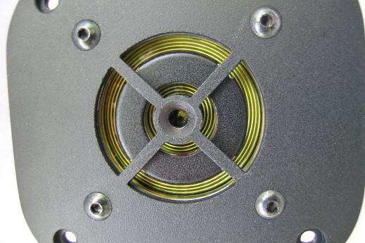 The kapton ribbon tweeter. |
Are the Adagio the perfect speakers, at least at "human" price? Well, I'm not sure. The soundstage is very good but not as the Avatar, the midrange is very clear but not so natural as my response 1S, the resolution is wonderful but not so unbelievable as the Audiostatic ES-300, which I proved in my room few months ago... The big deal of the Adagio is that they are close to the "best of the class" in almost every parameter: all that is ONE speaker of reasonable price!
|
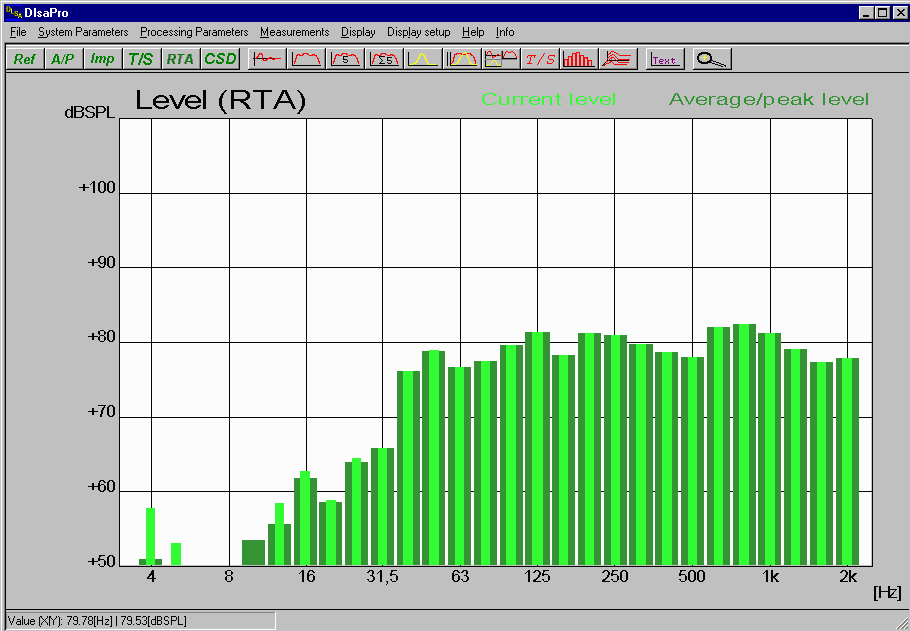 Adagio near field low response taken 30cm in front of the tweeter (no port). |
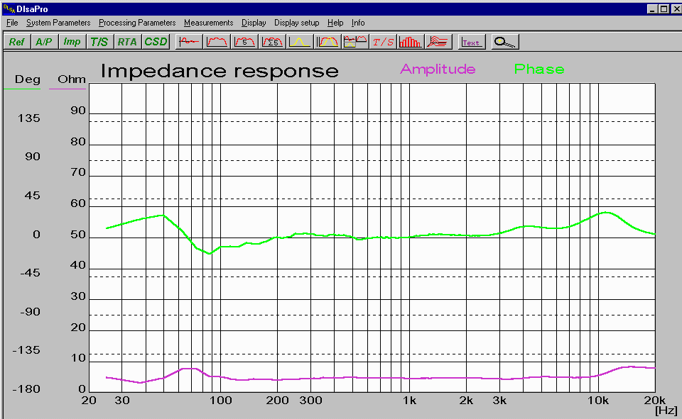 The Adagio impedance is a 5 Ohm straight line! Also the electric phase is very linear. |
In any case, the Adagio are not speakers for everyone: first of all their high resolution demands that all your system must be "correct". You will able to listen even a bit "coloured" cable being in the signal path (Ehi boys: Acoustic Zen is a "cable company" which developed this speaker as a testing instrument!). Second, they have a constant impedance (see the "straight" diagram 2!), but I measured it closer to 5 than 6 Ohm and not all the tube amplifiers will enjoy it (300B in particular?). Third, the tweeter starts to play music after 2/3 hours of use, but that is probably true for all ribbons. Fourth, they are quite linear, while some people could prefer a more "characterized" response...
So, if you are not prepared to put in discussion all your system, then don't be as fool like me and don't bring at home an Adagio sample "just for a trial", because probably you will not able to remove them and your wife will not be very happy this Christmas (see the last picture...)!
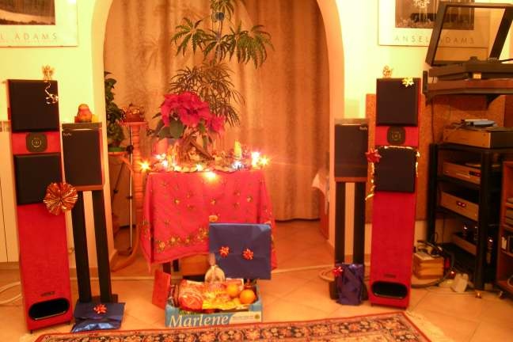
Tino
P.S. I wrote to Acoustic Zen about the "midrange not perfect" issue and Robert Lee answered me that he can try to do something, so, if you are interested, may be that I will update you in future...
Appendix: some Adagio measurements:
Here follows some other measures of my new speakers.
|
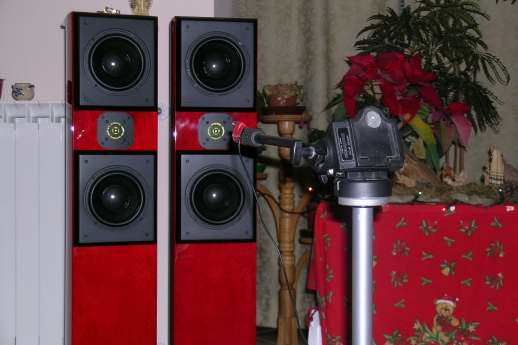 Comparing the two speakers responses. |
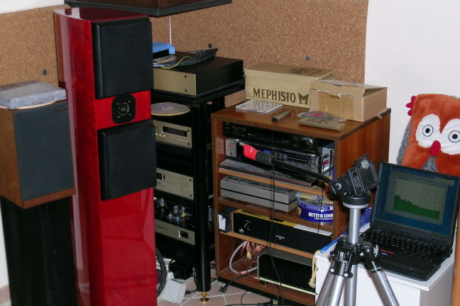 Measurement set-up. My assistant pop-up on the right... |
|---|---|
|
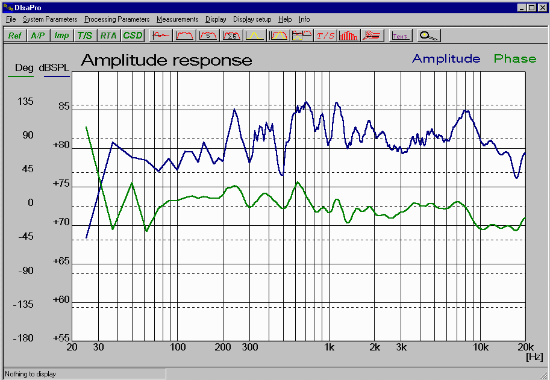 Left sp. frequency response at 1.1m. 1/3 octave mean. At 500 Hz there is a gap and at 6 kHz a peak. Very linear acoustical phase. |
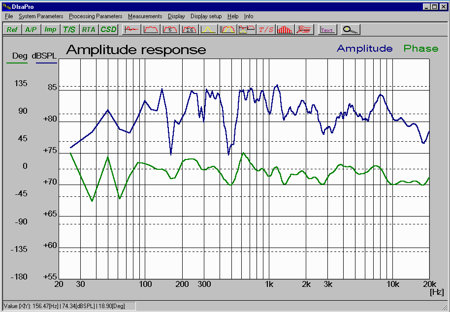 Right sp. frequency response. Similar to the previous but note also the 3 kHz “valley”, around the cross-over frequency. |
|
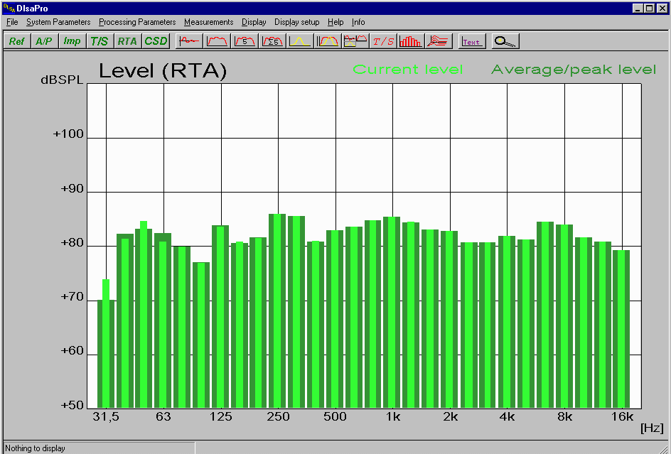 RTA analyser at 1.2 m: it is visible the 300 Hz gap, the 3 kHz valley and 6 kHz peak. |
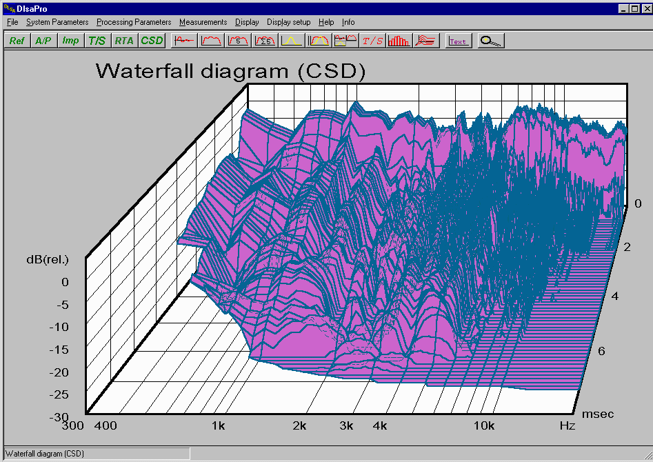 May be my DLSA measures are not so good to do a nice Waterfall... |
Tino © June 2007